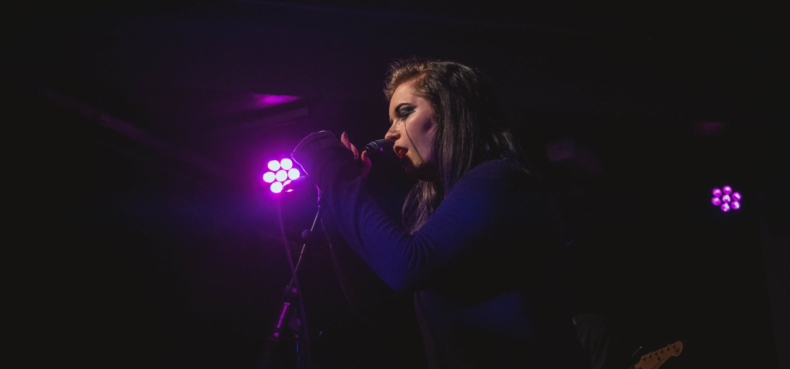

About Me
I'm Faith, and I am a PhD student at the University of Warwick.
My research involves using data from NASA's TESS mission and the NGTS array (Paranal Observatory, Chile) to
search for and characterise transiting exoplanets.

Education
MPhys Physics with Astrophysics - University of Kent (2015-2019)
Supervisor: Professor Michael Smith
PhD Exoplanet Astronomy - University of Warwick (2020-2024)
Supervisor: Dr Daniel Bayliss
Research Interests
Exoplanet transit and radial velocity data joint modelling
Habitability of exoplanets and icy Solar system moons
Planetary colonisation
Image processing
CCD and camera technology
Other Interests
In addition to my lifelong interest in science and astronomy, I am also a musician,
having played cello and piano for 17 years in over 15 different musical groups, orchestras,
pit bands and choirs. I have also played bass guitar for 4 years, self-taught, playing
mostly metal - I currently play bass with two Coventry-based bands, Daemonoth and Moonscream.
Outside of my research I am also interested in art conservation, osteology, ARGs and
transmedia storytelling, gardening and collecting vinyl records.
Research
Characterising Transiting Exoplanets with TESS and NGTS
The main bulk of my project work involves using a combination of transit photometry data and radial velocity data from
both space and ground-based telescopes. The joint modelling
that we perform using python code allows us to bring together a wealth of data from various sources, take into account
stellar activity using Gaussian Process (GP) modelling, and ultimately generate the fundamental parameters of exoplanet systems in order
to fully characterise them.
I am a member of the TESS Follow-Up Observing Program (TFOP), the monotransits working group of NGTS, and the Astronomers for Planet Earth
initiative (Astro4Earth).
I also have experience observing with ESO's HARPS spectrograph at La Silla Observatory, Chile, scheduling observations of stellar spectra for
radial velocity data on behalf of fellow exoplanet researchers.
MPhys Physics with Astrophysics - University of Kent (2015-2019)
My MPhys dissertation, entitled 'Understanding Massive Star Formation', discussed the proposal and testing of a stage-based model of massive star
formation using IDL code, with particular focus on bolometric temperature evolution and the Lyman excess problem. I also completed a
dissertation during my undergraduate study entitled 'An Assessment of Triton as a Target for Studies of Habitability', in which I designed a
research project to test new equipment ahead of a mission to Triton, based upon previous habitability research conducted on other icy moons of the Solar system.
Publications
Publications
TOI-836: a super-Earth and mini-Neptune transiting a nearby K-dwarf - Submitted to MNRAS
This first project puts into practice the above methods, which we used to examine transit photometry data from the TESS and
CHEOPS satellites, and the ground telescopes NGTS,
ASTEP, LCO and MEarth.
This data was jointly modelled with spectroscopic radial velocity data from HARPS and PFS
to produce a complete set of characterising values using the exoplanet python package.
TOI-836 b is a super-Earth planet on a 3.82 day orbit, and TOI-836 c is a sub-Neptune planet on an 8.59 day orbit.
TOI-836 c also displays Transit Timing Variations (TTVs), which may indicate the presence of a third planet in the system.
We submitted our discovery paper to MNRAS in March 2022.
Duotransit Candidates from the TESS Southern Ecliptic Hemisphere - In prep
My second project is a wider survey paper, examining and vetting transit lightcurves from Year 1 and Year 3 of the TESS mission after processing with a new pipeline
to identify exoplanets with only two transit events, filtering out those which are caused by asteroids and eclipsing binaries. These planets are typically on much longer periods,
and our ultimate goal will be to release our list
of new planet candidates as 'Community Objects of Interest' (CTOIs) which are amenable to follow-up modelling and characterisation.
We are expecting to submit our paper and list of candidates in mid-2022.
Conferences
Conferences
TEXT HERE
Outreach
Teachin:
I worked as a Senior Graduate Teaching Assistant for the first year undergraduate Mathematics module, PX149, during the first and second years of my PhD studies. My
responsibilities included marking and grading weekly assignments and delivering two seminar classes per week.
I also worked independently as a private tutor from October 2019 to June 2021, teaching Mathematics and Physics to GCSE and A-Level, working with students
across a wide range of abilities, ages and academic backgrounds.
Outreach
I am a student committee member for the monthly Equitea meeting, a forum designed to discuss topics related to Equity, Diversity and Inclusion (ED&I) in
relation to Astronomy, Physics and STEM. I have co-chaired two of these meetings thus far. In October 2021, I coordinated a fundraising month in aid of OCD-UK, which raised £530 in total for the charity. I have also taken the university's Active Bystander Intervention Course.
I am also on the Local Organising Committee (LOC) for the Centre for Exoplanets and Habitability here at Warwick, and I have
also been a student ambassador for the wider Physics department, assisting with open days for prospective students.
During my undergraduate study I was the treasurer of the University of Kent Space Society, with my responsibilities being
managing society budgets and accounts, and processing a development fund from Kent Union to install wireless internet at the telescope dome. We also hosted an
event in May 2016 for the Mercury transit, inviting local college students and astronomy enthusiasts to safely observe the transit using our 12-inch telescope.
Contact
Email: faith.hawthorn(at)warwick.ac.uk
Address:
Faith Hawthorn,
Department of Physics,
University of Warwick,
Coventry CV4 7AL
UK